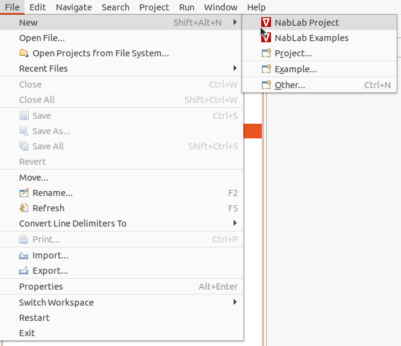
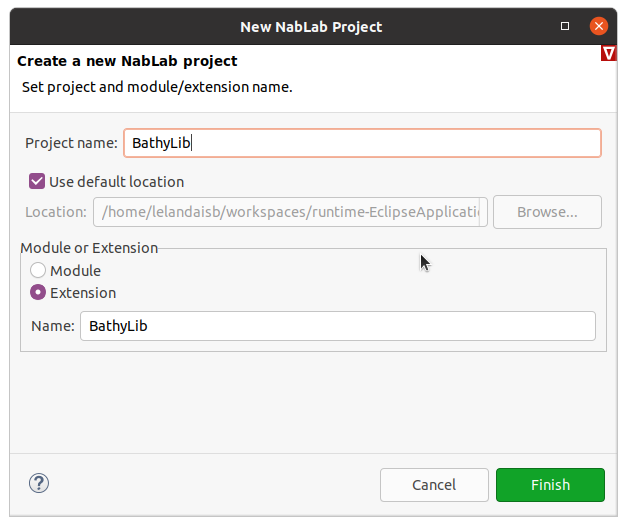
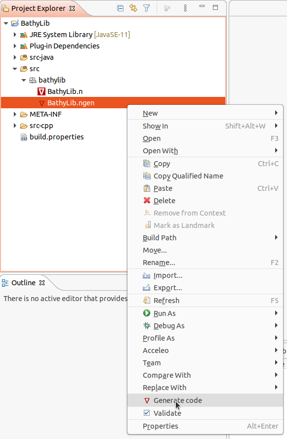
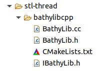

My first extension
Note
NabLab defines three kinds of extension: default, linear algebra and mesh. This tutorial covers the default one.
Presentation of the problem
Let us imagine the NabLab Swan module simulating the effects of the propagation of seismic waves on sea surface. To wave height variable H and the depth sea variable D need to be initialized thanks to the following InitH and InitD jobs:
// wave initialization
InitH: ∀ic∈innerCells(), H{ic} = nextWaveHeight();
// depth initialization
InitD:
if (DConst)
∀ic∈innerCells(), D{ic} = Dini;
else
∀ic∈innerCells(), D{ic} = nextDepth();
The nextWaveHeight and nextDepth functions have to access shared scientific data provided by NetCDF in a C language library.
The aim of this tutorial is to see how to create the NabLab extension containing the functions and how to implement and package a NabLab extension provider associated to this extension.
Creating the project
We will create a NabLab extension called BathyLib. The best practice consists in creating an independent project for the extension and its providers. To do that, just click on the main menu File > New > NabLab Project to create a new project:

A new wizard is launched, asking for a project name and an extension name:

Enter BathyLib as project name, select the Extension radio button and enter BathyLib as extension name and click on the Finish button to create the new project. The new project is available in the Model Explorer on the left of the window. It contains two files (BathyLib.n, and BathyLib.ngen) in the Tutorial/src/bathylib/ folder:
Note
The extension can also be created into the same project as the application, into a separate folder. However, if you plan to share the extension between projects, creating a project for the extension remains the best solution.
Defining the extension
Double-click on the src/bathylib/BathyLib.n file to open it and declare the nextWaveHeight and nextDepth functions in the NabLab editor like this:
extension BathyLib;
def nextWaveHeight: → ℝ;
def nextDepth: → ℝ;
The Swan module containing the InitH and InitD jobs need to import the extension. At first the swan project must add the BathyLib project to its dependencies: double-click on the /swan/META-INF/MANIFEST.mf file in the explorer on the left of the window, select the Dependencies tab and click on Add... button in the middle of the panel.
In the dialog box, select the BathyLib project and click on the Add button.
The swan project depends now on the BathyLib one. Finally, import the BathyLib extension in the Swan.n file to use the BathyLib functions into the Swan module:
module Swan;
with BathyLib.*;
It is noteworthy that the above functions have no body. We will see now how to create the C++ methods providing the glue code to call the NetCDF C functions.
Declaring a provider
The role of providers is to implement extensions. It is possible to implement several providers for an extension, for example a Java one and a C++ one. In this tutorial we will implement only one C++ provider for the BathyLib extension.
The first step to define the provider is to create a ngen file containing the provider definition.
Note
The ngen file already exists in the project: it has been created by the wizard. If you need to create this ngen file on an existing project, NabLab provides a code generator for that: right-click on the BathyLib.n file and select the Generate nablagen file menu.
Double-click on the BathyLib.ngen file to open the editor and suppress lines to let only a simple C++ provider as follows:
Provider BathyLibCpp : BathyLib
{
target = StlThread;
outputPath = "/BathyLib/src-cpp/stl-thread";
}
The above example defines a provider named BathyLibCpp that implements BathyLib. This provider will be generated for the StlThread target in the provided outputPath. More information on generation targets are available in the Ngen language reference.
Note
The implemented extension and the available targets are available by contextual code completion with CTRL-Space keys.
The output folder name is src-cpp rather than src-gen-cpp because the content of the folder is not totally generated: it will be filled by the user in the following section.
Implementing the provider
The aim of the previously defined provider is to implement the nextWaveHeight and nextDepth BathyLib functions. These functions have to be implemented as methods of a C++ class called BathyLibCpp, the name of the provider. To assist the provider implementation, NabLab offers a code generator. Right-click on the BathyLib.ngen file and select the Generate Code menu.

Generated files can be observed in the outputPath folder, in our example "/BathyLib/src-cpp/stl-thread".

The CMakeLists.txt file is full generated and contains recipes to build the library.
The IBathyLib.h file contains the interface representing the BathyLib extension. This file is 100% generated: do not edit this file as it is written in the header comment. This file contains the C++ StlThread generator implementation of the NabLab BathyLib extension and a jsonInit method.
Note
Template functions can not be defined abstract in the interface. Consequently, if the extension implementation generates template functions, they appear as comment in the interface for information.
Extension implementation
The BathyLib.h and BathyLib.cc files define the C++ class implementing the BathyLib extension represented by the IBathyLib C++ interface. The body of their methods is empty and has to be implemented. In our example the methods will contain glue code in charge of calling the NetCDF functions.
The BathyLib.h and BathyLib.cc files can be edited, they will not be overwritten: they are only generated if they do not already exist. If the extension changes, the generation of the provider will change the interface but not the implementation class (never overwritten). Consequently the implemented code will not compile. In this case, copy the signature of the interface's functions and paste them into the implementation class. This model follows the Generation Gap Pattern.
Provider initialization using Json
NabLab creates providers by calling the default constructor (with no argument).
The jsonInit method allows to initialize the provider class if needed.
When you implement a provider extension, you are free to inject the Json content you wish. At the beginning of the execution, when the Json data file is read, NabLab will look for Json fields corresponding to extension names with the first letter in lower case; in the above example, bathyLib. This file must be in the block of the module (or extension) using the extension; in the above example in the swan block.
{
"swan":
{
"_outputPath_comment":"empty outputPath to disable output",
"outputPath":"output",
"outputPeriod":10,
"maxIter":2500000,
"stopTime":50.0,
"bathyLib":
{
"waveFilename":"$ENV{HOME}/workspaces/swan/swan/data/swan/waveCanal.grd",
"waveVarName":"z"
}
},
"mesh":
{
"nbXQuads":1103,
"nbYQuads":44,
"xSize":200.0,
"ySize":200.0
}
}
The Json block corresponding to an extension is injected as an argument to the jsonInit method of the extension. In the previous example, the value of the bathyLib field, becomes the value of the jsonContent argument in BathyLib::jsonInit(const char* jsonContent) method. This value is:
{
"waveFilename":"$ENV{HOME}/workspaces/swan/swan/data/swan/waveCanal.grd",
"waveVarName":"z"
}
Configuring dependencies
The CMakeLists.txt file generated with the provider is designed to be included in the CMakeLists.txt of the module using the extension, not to be called directly. It is totally generated and is overwritten during each generation: do not edit this file. Nevertheless, the provider sometimes need to add dependencies to external libraries. Fortunately, all NabLab generated CMakeLists.txt files allow to include the content of a Project.cmake file:
# OPTIONAL USER OPTIONS IN Project.cmake
if (EXISTS ${CMAKE_CURRENT_SOURCE_DIR}/Project.cmake)
include(${CMAKE_CURRENT_SOURCE_DIR}/Project.cmake)
endif()
The previously defined BathyLibCpp provider depends on NetCDF library. Thus, this dependency has to appear in a Project.cmake file like this:
target_link_libraries(bathylibcpp PUBLIC netcdf)
Application generation
Extension and provider association
So, now what do we have to do to inject the provider in an application that imports the extension?
Most of the time, nothing! If the target of generation of the application (defined in the ngen file) matches the provider's target or one of its compatible targets (also defined in the ngen file) the matching between extension and provider is automatic.
In the example, the Swan application has a unique StlThread generation target and it corresponds to the target field of the BathyLibCpp provider. During the generation of the Swan application, the NabLab console displays a message showing the default match:
If several providers are included in the ngen file, the generation process will take the first one which matches the target conditions. To bypass this mechanism, the matching between extension and provider can be explicitly defined in the ngen file of an application for each generation target after the outputPath field. For the Swan application, this is done with the following instruction:
StlThread
{
outputPath = "/swan/src-gen-cpp/stl-thread";
extension BathyLib providedBy BathyLibCpp;
CMAKE_CXX_COMPILER = "/usr/bin/g++";
}
Once again, the code completion (with CTRL-Space key) proposes the list of extension and the list of providers implementing the extension.
Building the application
The application can be built as usual: go into the generation directory containing the CMakeLists.txt file (in our example /swan/src-gen-cpp/stl-thread/swan) and enter the following commands:
mkdir build
cd build
cmake ..
cmake --build .
All the linked libraries will be built in the build directory, including those of the providers.
Application interpretation
The interpreter operates as the generator to look for a provider matching an extension. The interpreter is written in Java and look for Java providers. Most of the time NabLab users only need C++ code generation and they implement C++ providers. Fortunately, NabLab provides a JNI generation mechanism to call C++ providers from the interpreter (or from a Java application).
To trigger the JNI code generation, configure the interpreter target in the ngen file with the desired provider. In our Swan example, the ngen file has to define the following interpreter target:
Interpreter
{
outputPath = "/swan/src-gen-interpreter";
extension BathyLib providedBy BathyLibCpp;
CMAKE_CXX_COMPILER = "/usr/bin/g++";
JAVA_HOME = "/usr/lib/jvm/java-11-openjdk-amd64";
}
The interpreter block can provide the path to the desired compiler into the CMAKE_CXX_COMPILER variable and needs to set the JAVA_HOME variable to allow the JNI compilation.
To get the JNI code for the interpreter, launch the generation as usual: right-click on the ngen file (in the example Swan.ngen) and select Generate Code. The NabLab console displays information showing the JNI generation:
The generation produces a folder for each JNI provider (name of the provider + jni) and a folder corresponding to the application. In our example, it corresponds to a bathylibcppjni folder for the bathylibcpp provider and a swan folder for the application.
To build the generated code, just go into the folder application, /swan/src-gen-interpreter/swan in our example, and build the code as usual:
mkdir build
cd build
cmake ..
cmake --build .
The interpretation needs an additional installation step to provide libraries to the interpreter in: make install.
Finally the interpretation process can be triggered as usual: right-click on the ngen file, select Run As > Start Interpretation.
Note
Do not forget that the JNI generation process is not necessary if your application does not use extension or if you already have a Java provider. In this case, interpretation can be done directly.